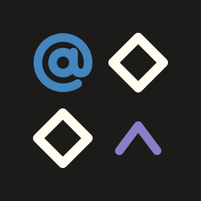

What if the platform locks down tomorrow?
Twitter/Reddit API lockdown. Instagram/Facebook feed changes. Substack subscriptions no longer by email.
If you're a user
You start over. Again.
- Switch platforms? Start from zero.
- Account suspended? Lose everything.
- Algorithm shifts? Your feed changes.
- Platform dies? Your data dies with it.
If you're a brand or creator
Your audience evaporates.
- Your audience belongs to the platform, not you.
- One algorithm change kills your reach overnight.
- API changes break every tool built on top.
- Migrate? You can't take your community with you.
Same lesson, every cycle: you're a tenant on someone else's platform.
What could it feel like?
A conference networking app.
Today, every conf app
A new silo. An empty profile. Again.
- Make a new account
- Re-type your name, role, bio, photo
- Re-import your socials
- Hand-pick the people you already know
- Tick interests, swipe through strangers
By the time it's any use, the conference is over.
→
On atproto
Sign in. The app already knows you.
1.Log in with your atproto account
Right away:
- Friends and follows who are also going
- People worth talking to, by shared interest
- Warm intros from shared context
- "Invite these friends" in one tap
No new account. Same identity, graph, and data.
Data lives with the person, not the platform.
posts
follows
identity
profile
↓
Personal Data Server
PDS
single source of truth
↓
App
App
App
App
…
many apps · all read from the same PDS
Move providers any time. Data, followers, identity travel with the person.
Three pluggable services.
Anyone can run any of them. Users own their data.
Speech layer
PDS
Personal Data Server. Hosts your signed repository: posts, likes, follows, profile. Tied to your DID (portable identity). Self-host or use a provider, switch any time.
Network layer
Relay
Crawls every PDS, emits a single firehose of all events. Stateless plumbing. Anyone can run one. Think: "the public bus."
Reach layer
AppView
Subscribes to the firehose, indexes it, serves an app. Bluesky is one. A forum, a podcast directory, a CV network are others. Same data, many apps.
you write here
→
aggregated here
→
read here
Glue: Lexicons are shared schemas so different AppViews understand the same data. Any AppView that speaks the same lexicon can read a "post" from Bluesky.
One identity. Many apps.
The same account works across the whole Atmosphere.
0
apps in the Atmosphere, and counting
Replacing blogs, Substack, GitHub, LinkedIn, Discourse, Instagram, TikTok, YouTube — and counting.
One signed-in account. One portable identity. 221 apps to use it in.
What's in it for you?
If you build for, advise, or own a community online — atproto changes the math.
Brands & communities
Own your audience.
Self-host your community (Barazo). Customer data, follower data, all yours. Platform shifts don't kill your reach.
Builders & vendors
Skip the registration funnel.
Any atproto user signs in with one tap. Same identity, your app. Reach the whole Atmosphere, no API tax.
Agencies & consultants
Bet on protocol, not platform.
Recommend tools clients can actually own. Build solutions that don't break when a platform changes its API or its mind. Open protocols outlive platforms.
Take the deal: Less platform risk. Direct customer relationships. Your work doesn't get held hostage.
Skip it: Keep paying rent on someone else's platform, hoping the lease doesn't change.
Reality check: ~60M atproto users today (vs Twitter's 600M, Meta's 3B). Adoption is early. Growth is real. Being early means catching the curve.

Singi LabsOpen source foundations for networked apps.

Barazo
barazo.forum
A federated forum on the AT Protocol. Self-hostable, with communities you actually control. Reddit or Discourse without the lock-in.

Sifa ID
sifa.id
A professional identity layer on atproto. A career profile that travels with you, a social graph that's yours, sybil-resistant trust under the hood.
Your turn